Ocean Series

Gemtek is launching a new series of Generic Wi-Fi 7 product lines. We are committed to engaging with our clients and showcasing our industrial design capabilities through creativity and storytelling. For our 2023 products, we are aligning with international environmental trends (ESG) by using PCR (Post-Consumer Recycled) plastic materials and introducing a user-centered design approach as a new starting point. Each product is like a piece of art, embodying our designers' passion for the ocean and commitment to environmental sustainability.
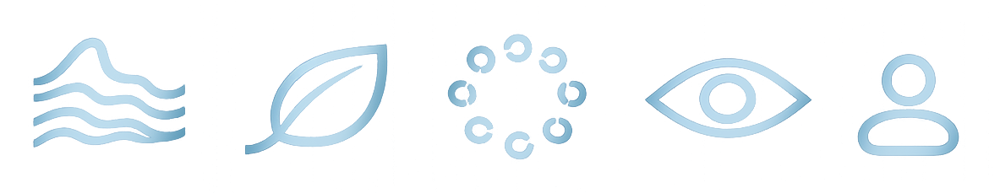
Drawing from the forms and movements of sea creatures, we crafted a design narrative rooted in nature and fluidity, giving each product a distinct character within a unified visual identity.
From product housing to packaging, we actively chose environmentally responsible materials, including PCR plastics, reflecting Gemtek's commitment to sustainable development across the entire product lifecycle.
Moving beyond client-driven co-creation, we developed these designs internally to demonstrate Gemtek's own design vision, presented through refined product visuals and compelling storytelling.
Every product in this series was designed to stand out at first glance. Through distinctive silhouettes, bold CMF choices, and memorable forms, we aimed to capture attention in exhibition halls, investor presentations, and competitive markets alike.
We examined the relationship between user, product, and environment to identify real pain points. Each design decision was guided by improving usability and ensuring the experience meets user expectations.
Inspired by the natural forms of marine life, our design conveys a sense of nature and fluidity. We conducted in-depth research and analysis to ensure consistent visual identity across the product series.
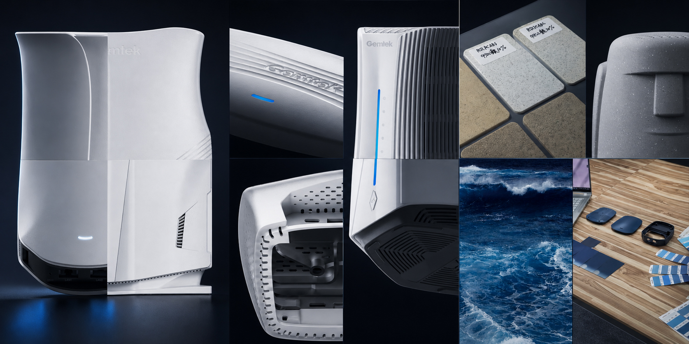
A memorable appearance is the key to creating memorable moments. I decided to capture the natural forms of waves, shells, and biomimicry, these features present an elegant, flowing visual experience.
Explore detailed texture expressions and turn ocean bubbles, skin textures, and spots from sea creatures into designs.
Material Play: Leveraged PCR plastic's speckled texture for a distinct, natural aesthetic.
Color Customization: Partnered with CMF to replace monotonous palettes with ocean blue and sandy white, establishing standard color chips for mass production.
This series aims to convey characteristics of smoothness, modern technology, curvature, elegance, neutrality, and sophistication.
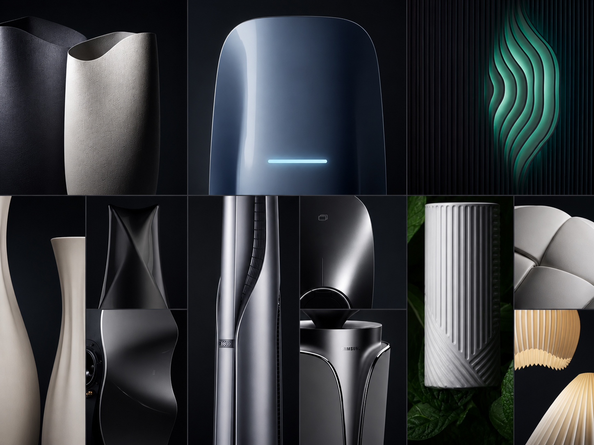
Simple and elegant, featuring organic curves that present natural and fluid lines.
Utilizes curvature and texture to create a sense of flowing light, enhancing visual dynamics.
Minimalist technology aesthetic, seamlessly integrating with modern home environments, suitable for various interior settings.
Features a sense of understated luxury with surface treatments including matte textures, bio-3D textures, and mirror finishes, accented with metallic highlights to enhance quality and taste.
Conveys feelings of subtlety, elegance, smoothness, and sophistication, providing a comfortable experience both visually and tactually.
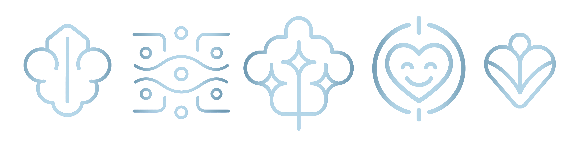
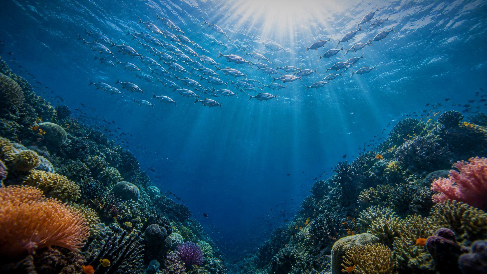
We draw inspiration from marine life, exploring its unique characteristics and selecting iconic creatures as our muse. By integrating the features and emotional impressions of the design theme, we further develop innovative designs.
In addition to developing a diverse range of products, I also created ocean-themed imagery that represents the products, including photo editing and composite images. By using strong visual communication skills, This visual system encouraged internal discussion and strengthened stakeholder engagement.
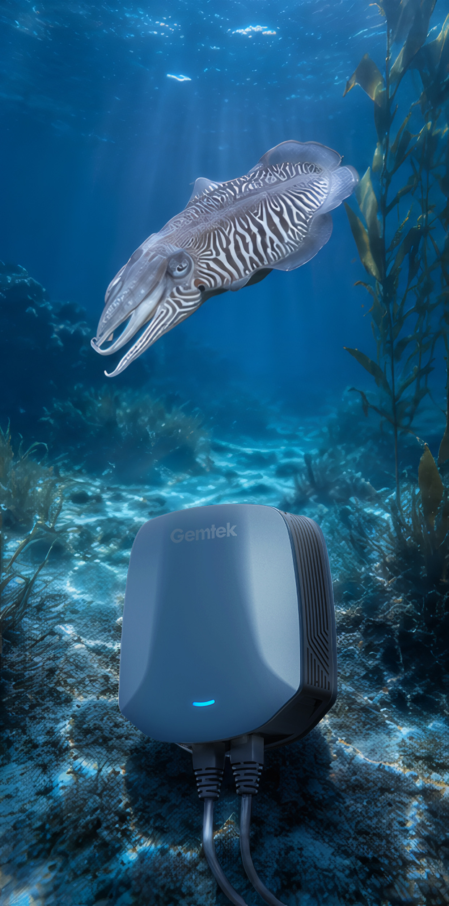
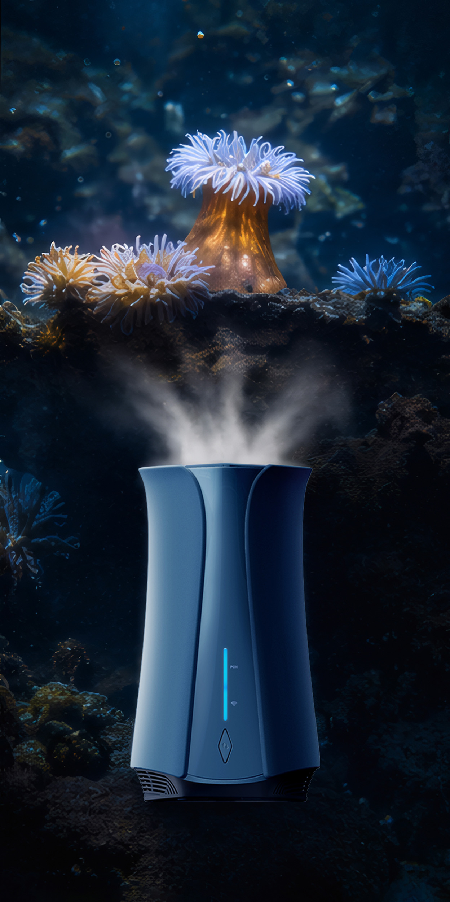
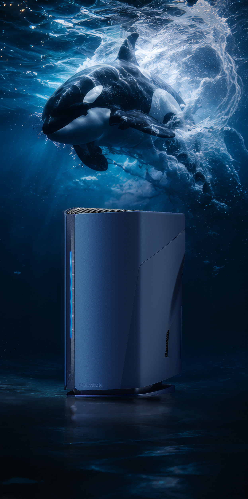
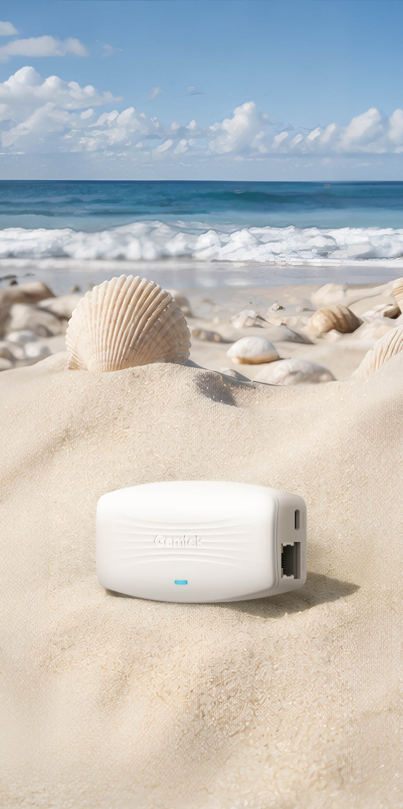
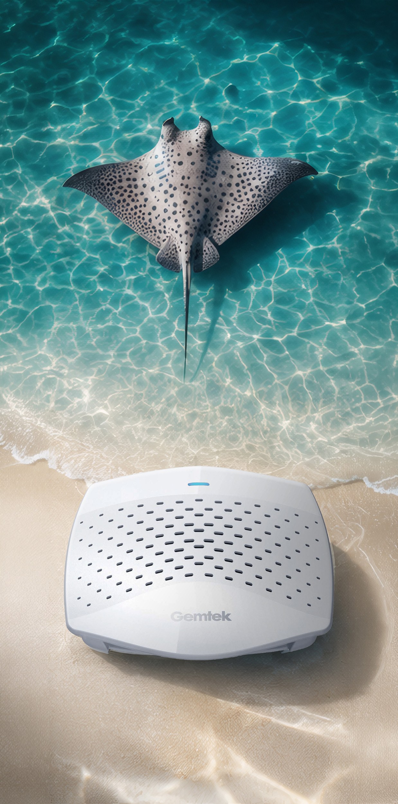
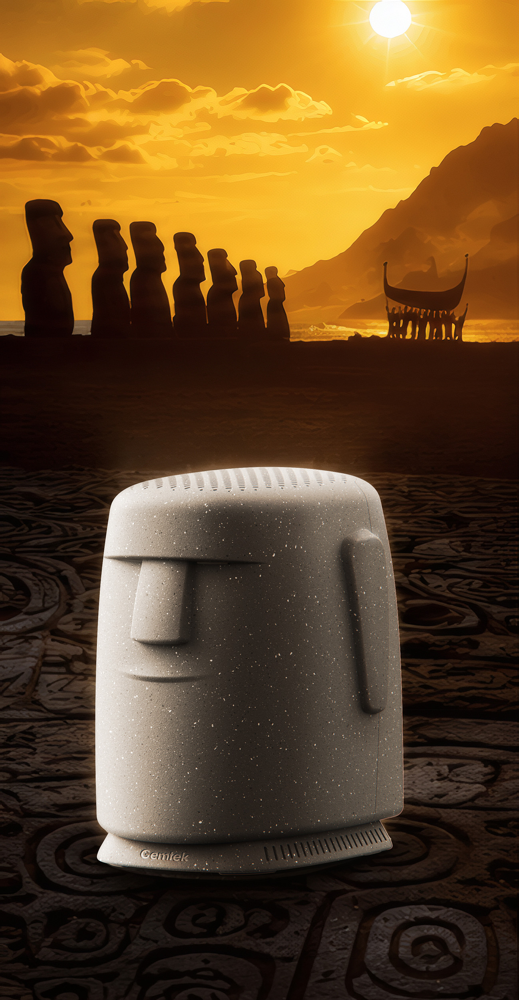
A distinctive, scalable design language for the future of connectivity.
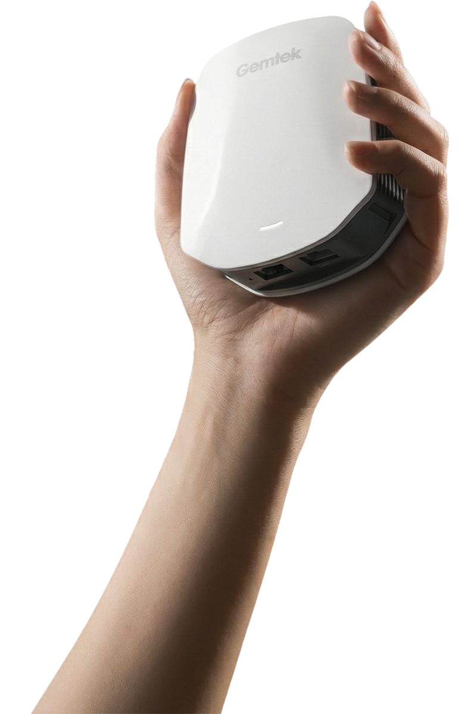